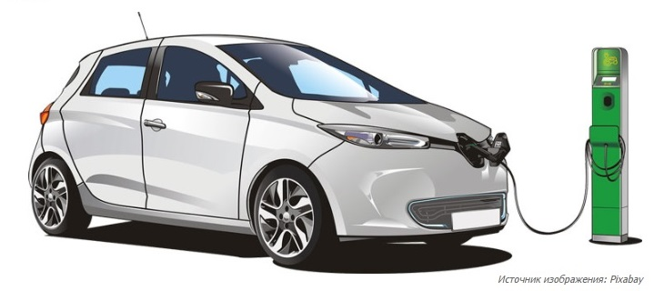

17.11.2021 [14:11], Геннадий Детинич
Южнокорейские производители литиевых аккумуляторов ушли из пятёрки мировых лидеров. Китайские компании за год нарастили экспорт литиевых батарей почти в три раза и не оставили конкурентам из других стран шансов на лидирующие позиции.
Согласно свежим даннымКитайского инновационного альянса по производству автомобильных аккумуляторных батарей (CAPBIIA), в период с января по октябрь 2021 года включительно в Китае выпущено аккумуляторов общей ёмкостью 159,8 ГВт·ч. Год назад за аналогичный период было произведено аккумуляторов на 55,5 ГВт·ч. Произведённой в этом году ёмкости аккумуляторов достаточно для выпуска 2,5 млн электромобилей.
По информации CAPBIIA, на экспорт было отправлено около 30 % выпущенных литиевых аккумуляторов, тогда как остальными батареями в Ките было оснащено 1,75 млн электромобилей. Поставки выросли как в среде производства литий-железо-фосфатных (LFP) аккумуляторов, которые используются для недорогих электромобилей и тяжёлого транспорта, так и в среде никель-кобальт-марганцевых (NCM) батарей для электромобилей среднего и высокого классов. В частности, из всех выпущенных в этом году литиевых аккумуляторов в Китае на долю NCM-аккумуляторов пришлось 72 ГВт·ч или в два раза больше, чем в прошлом году (32,7 ГВт·ч).
Согласно отчёту, самую большую долю на мировом рынке удерживает компания CATL с объёмом батарей 54,48 ГВт·ч. За ней следуют BYD и CALB с 17,88 ГВт·ч и 6,42 ГВт·ч соответственно. Южнокорейская LG Energy Solution произвела батарей на 3,26 ГВт·ч. В прошлом году она ещё входила в тройку мировых лидеров, но в этом году выпала даже из пятёрки.
В то же время корейские производители аккумуляторов пока не испытывают сильной обеспокоенности по поводу отставания от китайцев. «Мы не в полной мере ощущаем эту угрозу, поскольку спрос на электромобили растёт быстрее, чем рост китайских аккумуляторных компаний», — сказал один из представителей Южной Кореи. Но повод задуматься о том, к чему это приведёт, есть и он не может не тревожить южнокорейские компании.
Источник:Каждый вечер по будням мы рассылаем по email короткую сводку новостей за день без белиберды и рекламы. Две минуты на чтение — и вы в курсе всех главных событий, если оставите нам свой адрес.
Вот как выглядит наше последнее письмо.